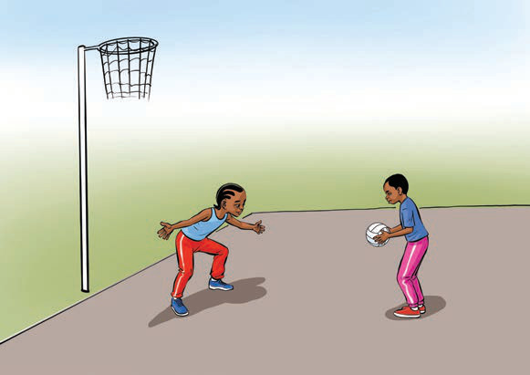

(e) Kukaba
Kukaba ni kuzuia timu pinzani kupitisha mpira au kufunga. Wachezaji wa nafasi ya ulinzi kama Golikipa (GK) na mlinzi (GD) wanapaswa kuwa wepesi na wenye uwezo wa kusoma mchezo ili kuwazuia washambuliaji wa timu pinzani. Namna kuu za kukaba katika netiboli ni:
(i)
Kukaba mtu kwa mtu. Mchezaji anamfuata mpinzani wake na kujaribu kuzuia pasi au shuti.
(ii)
Kukaba kwa eneo. Wachezaji wa ulinzi wanakaa katika maeneo maalumu ili kuhakikisha hakuna nafasi kwa wapinzani.
